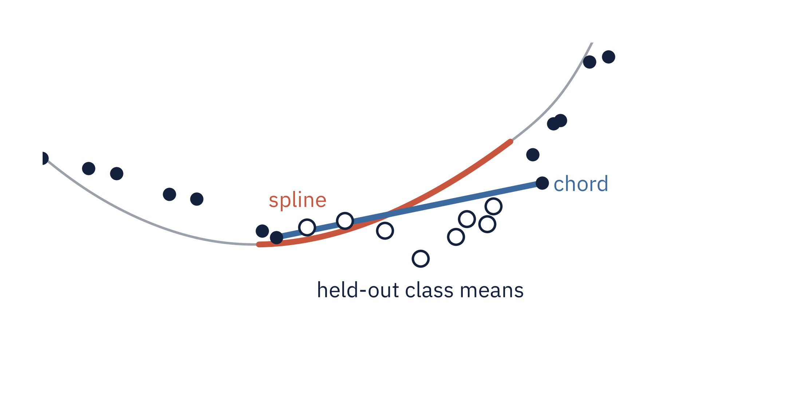

<section id="p2-methods" data-transition="fade" style="background:#FBFBF8; color:#14213D; font-family:'IBM Plex Sans', Arial, sans-serif; padding:128px 128px 160px; display:flex; flex-direction:column; gap:48px">
<h2 style="font-family:'Source Serif 4', Georgia, serif; font-size:56px; font-weight:600; line-height:1.1; letter-spacing:-0.5px; width:1600px">At held-out targets, [closest method pending] beats the spline</h2>
<div style="display:flex; gap:40px; align-items:center"><div style="width:1164px; background:#FFFFFF; border:1px solid #E4E2DC; border-radius:12px; padding:32px"></div><div style="flex:1; display:flex; flex-direction:column; gap:28px"><table style="width:480px; font-size:28px; color:#14213D"><tr><td style=" width:66%; color:#5B6472">chord</td><td style=" width:34%; font-family:'Source Serif 4', Georgia, serif; font-weight:600; color:#14213D; text-align:right">4.7°</td></tr><tr><td style=" color:#5B6472">spline</td><td style=" font-family:'Source Serif 4', Georgia, serif; font-weight:600; color:#14213D; text-align:right">9.7°</td></tr><tr><td style=" color:#5B6472">conceptor</td><td style=" font-family:'Source Serif 4', Georgia, serif; font-weight:600; color:#14213D; text-align:right">[pending]</td></tr><tr><td style=" color:#5B6472">energy geodesic</td><td style=" font-family:'Source Serif 4', Georgia, serif; font-weight:600; color:#14213D; text-align:right">[pending]</td></tr></table><p style="font-size:32px; font-weight:600; line-height:1.3; color:#14213D">Held-out class means sit near the chord.</p></div></div>
<p style="position:absolute; left:128px; bottom:64px; width:1664px; font-size:24px; color:#5B6472">B · Method</p>
<aside>~60 s. PENDING values: conceptor row from results/arcs_conceptor/*/p2_conceptor_direction_L12.json; energy-geodesic row from the geodesic run's results file (name to be confirmed); title slot from whichever lands closest. Sources: REPORT.md §1 for the chord and spline endpoint errors on the headline arc; results/arcs_conceptor/*/p2_conceptor_direction_L12.json for the conceptor; the geodesic run's results file under Goodfire's own energy metric. This is the negative result. The comparison baseline in the paper's appendix A.9 is the straight chord between the raw class means at the two ends. Run with our matched-support edit, it lands closer to a held-out target than the smoothing spline: 4.7 against 9.7 degrees at point 12 and 3.6 against 10.7 at point 22 on the headline arc, with clip-bootstrap gaps of plus 5.0, interval 3.9 to 6.1, and plus 7.0, interval 6.0 to 8.1. The headline arc is the extreme case at point 12 and the second largest at point 22. Over the 16 arcs the chord's lead is 1.3 plus or minus 1.8 degrees at point 12, with the spline ahead on 3, and 2.3 plus or minus 2.0 at point 22, ahead on none. The figure shows why on this arc: the held-out class means, the open circles, sit close to the chord, and the smoothing spline, fitted without them through smoothed knots, bends away. The spline only ties the chord drawn between its own smoothed knots, which was our line arm until a parity audit against the paper's code. For speed and acceleration, which are straight, the spline adds nothing; in extrapolation our smoothing spline trails the chord by 0.02 to 0.06, while the authors' interpolating arm is better on speed and worse on acceleration. At the 70/30 split the point-22 endpoint loss shrinks to 0.5 degrees.</aside>
</section>
